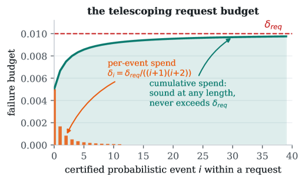
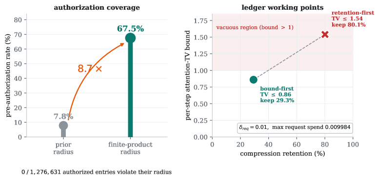
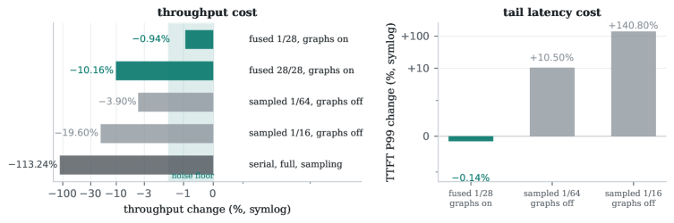

The composed error-bound chain, telescoping budget, and concentration/supermartingale certificates are machine-checked in Lean/Mathlib over a finite product space.
Abstract
Modern models no longer keep a plain KV cache: latent caches, learned sparse selectors and recurrent states each carry the model's memory in a different form, and each fails differently under compression. We give a runtime observability contract that covers all four memory classes with three operators, instantiate it on six model configurations across five architecture families, and compose the per-stage bounds into an executable request-level risk ledger. Contracts carry their error metric as a type – composition is only defined when metrics match, and this check rejected our own first composed chain; the repaired chain crosses metrics through two proved bridges, and whatever no formal system can certify is measured instead, dropping the composed tier to empirical automatically: every claim is certified, partially certified, or empirical, composition inherits the weakest tier, and the tier is decided by the machine. Replayed over $12.4$M entry reads and run under eight-way concurrency with per-request budgets and fail-closed identity attribution, the ledger quantifies the honest trade-off on today's witness and holds its risk budget with zero violations. A fused always-on probe observes a declared one-layer subset under CUDA graphs inside the serving noise floor. Applied to a served DeepSeek-V4 stack with a packed compressed-KV prototype, the same machinery localizes a silent corruption to a precise structural boundary – exact in the eviction-free, identity-isolated regime, with every observed failure in an eviction or slot-reuse regime – through a machine-adjudicated discrimination campaign whose calculus rejected two of our own confounded inferences along the way. All artifacts, guards, and the Lean development are released at https://github.com/metask-ai/witprobe-attention-memory; every number in this paper regenerates from the shipped artifacts by one command.
Problem
Modern attention memory (dense KV, latent caches, learned sparse selectors, recurrent states) each fail differently under compression, and serving systems trust this state without verifying its fidelity, leaving silent corruptions undetected.
Approach
Attention memory is written as three operators (update, select, read), each given a local affine error contract with a failure budget. Contracts carry their error metric as a type so that composition is only defined when metrics match, and each composed claim is labeled certified, partially certified, or empirical, inheriting the weakest tier. The measurement mathematics—the composed bounds, a telescoping request budget, per-entry concentration radii, and a drift-detecting e-process—is machine-checked in Lean/Mathlib over a finite product space with no extra measure-theoretic axioms. Runtime probes injected into unmodified serving code produce the witnesses that instantiate the bounds.

Figure 2: The telescoping request budget. Per-event spends \delta_{i}=\delta_{req}/((i{+}1)(i{+}2)) (orange) and their cumulative sum (teal) never reach \delta_{req} (dashed): sound at unknown request length—the analytic content of telescope_sum , drawn at the implementation’s \delta_{req}=0.01 .
Results
Instantiated on six models across five architecture families over 12.4M entry reads under eight-way concurrency, the risk ledger held its budget with zero violations. A fused always-on probe on one declared layer under CUDA graphs cost -0.94% throughput (inside the noise floor), and on a served DeepSeek-V4 stack the machinery localized a silent corruption to a precise structural boundary tied to eviction/slot-reuse regimes.

Figure 4: The certified object, quantitatively. Left: the finite-product radius lifts pre-authorization coverage from 7.8\% to 67.5\% at the same threshold ( 0 of 1{,}276{,}631 authorized entries violate). Right: the ledger’s two working points—retention-first keeps 80.1\% but its per-step bound ( 1.54 ) is vacuous; bound-first certifies TV \leq 0.86 at 29.3\% retention. Max request spend 0.009984

Figure 7: Resident probe cost. Under CUDA graphs the fused meter at one of 28 layers costs -0.94\% throughput ( -0.14\% TTFT P99), inside the noise floor; full coverage ( -10.16\% ) remains a diagnostic mode. Graphs-off sampling points shown for caliber.